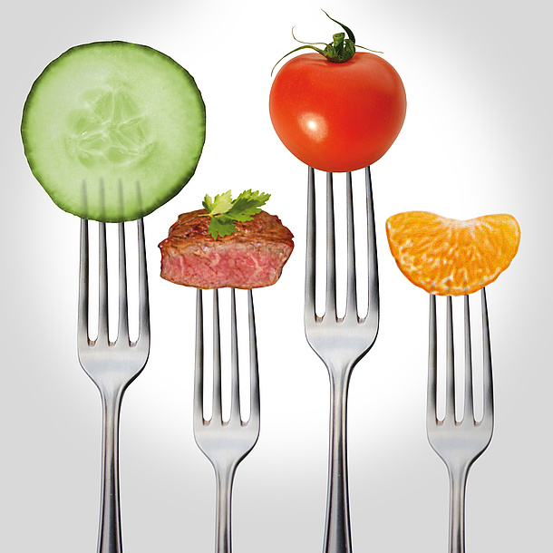

聽到「加工食品」一詞，多數的人們可能有負面的印象，因此盡可能選擇不接觸加工食品，只接觸他們認為的「天然食品」，然而對於「加工」這樣的一詞，我們是否抱持正確的看法？根據歐盟食品訊息委員會於2010年7月1日發表之文章，食品加工被稱為人類史上最重大的一件事。而食品加工最基本的定義是：將生食經由各種處理方式，使其更適合食用、烹調及儲存
食品加工最基本的定義是：將生食經由各種處理方式，使其更適合食用、烹調及儲存。所以食品加工與我們的生活息息相關，我們每天為自己和家人準備餐點的過程，就是一種食品加工；有些食物若不經過適當加工，對食品安全甚至是有危害的。
幾世紀以前，人們就已知道透過加工來保存食物，而數百年以來，我們的祖先已知許多食品加工之方法，如：利用鹽巴保存肉品、香料來增添風味、糖漬保存水果及用醋來醃漬蔬菜。而現今若要達到消費者追求的營養、安全、方便和多樣性的食物，就必須依賴食品加工，例如：利用食品添加物。
事實上，大部分的時候在食用之前，都會經由一定的加工程序，就以我們所認為的天然食品：白飯和麵條，也是將稻穀和小麥經過繁雜的加工程序所製造而成，並非只有添加食品添加劑或者醃漬才是所謂的加工食品，讓我們看看為和食品加工會被認為是人類史上非常重大的一件事：
1.適口性與風味的改善
事實上所有的食物在食用前都會經過一定程度的加工處理，如同香蕉或馬鈴薯的去皮動作就是簡單的加工。而像小麥製品或米製品就是比較精細而繁雜的加工：收成後先進行去殼、莖、灰塵和碎片等清潔流程，再去除胚芽或研磨，才能進一步煮成米飯或製成麵包和麵條製品。食品的質地口感與加工技術密不可分，例如：餐桌上的早餐穀物或脆片等擠壓膨發食品，也是透過大規模的加工設備更是無法做到。
2增加保存期限及改善營養價值
加工除了延長保存期限，還能夠改善營養價值，如冷凍加工可以使營養不易流失、烹煮後可以提高也些食品的營養價值。根據許多研究報告顯示：茄紅素和類黃酮（如兒茶素和表兒茶素）具有良好的抗氧化活性，有預防心血管疾病的功能，還能降低罹患某些癌症的風險。加工處理含茄紅素的食品，像是把番茄煮過或製成番茄醬，讓我們的身體可以更容易吸收茄紅素。又或是為了提高食物營養的吸收率，例如將牛奶進行加工均質化，讓乳脂肪、酪蛋白及乳清蛋白的粒徑變小，比未均質化的牛奶更好吸收這些營養成分。
3提升安全性
許多加工技術為減少致病菌數量以確保食品安全，藉由減少水分或是改變食品酸鹼值，使致病菌生理活性受到影響，無法生長或破壞孢子，常見方法有乾燥、煙燻、酸洗法。其他加工技術如製罐、巴氏德殺菌和超高溫(UHT)則是藉由熱處理來減少細菌。
因此，煙燻或醃漬肉品，如：香腸，雖然高鹽類對於人體的腎臟確實會造成負擔，但是只要食用適量，因為加工後的致病菌的減少，保存期限拉長，還能夠享受加工肉品帶來的美味。
食品加工的另一優點則是破壞抗營養分子，舉例來說：烹調可以破壞豆類、馬鈴薯中的胰蛋白酶抑制劑。胰蛋白酶抑制劑為一種球蛋白，可以使人體中的胰蛋白酶和胰凝乳蛋白酶，失去分解蛋白質的功能，因此若此種抗營養分子存在於食物中，不僅降低營養價值，在高劑量之下，對人體甚至是有害。
4.提升儲藏性、便利性及提供更多選擇
食品加工可以延長保存期限，蔬果使用的調氣包裝就是其中一例，讓我們不用頻繁地購買新鮮食材也能享有當地採收的新鮮度，提升消費者的便利性。再者，在現今全球化的社會，人們接觸到食品口味與樣式也越來越多，不同文化的烹煮形式也有所不同，因此為了迎合廣大消費者的需求，業者以多樣化的食品加工讓我們在家就能品嚐到其他國家的特色食品
 適當的加工，對於我們並非全是壞處，其實在我們生活中很難脫離加工食品5減少營養不均衡和健康擔憂
當人們收入較低時，一般飲食種類比較少，營養攝取也容易不均衡。透過食品加工所製成的食品如：麵粉、麵包和早餐榖物，可進行調整還達到營養價值提升，除此之外，冷凍加工也使養分容易被保存，讓我們攝取到較高的營養。透過食品加工技術，可藉由飲食控制心臟病、肥胖和糖尿病等慢性疾病，例如消費者可以選擇低脂或脫脂的食品，如低脂牛奶，是利用離心技術使脂肪懸浮表面後，再移除脂肪。食品加工產品也包含低鹽、低糖和高纖維等食品，讓消費者有更多有益身體之選擇。
此篇文章，曾經投稿於食力FoodNext食品文章專欄
食力FoodNext